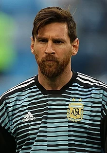

Lionel Messi, in full Lionel Andrés Messi, also called Leo Messi, (born June 24, 1987, Rosario, Argentina), Argentine-born football (soccer) player who was named Fédération Internationale de Football Association (FIFA) world player of the year six times (2009–12, 2015, and 2019). Messi started playing football as a boy and in 1995 joined the youth team of Newell’s Old Boys (a Rosario-based top-division football club). Messi’s phenomenal skills garnered the attention of prestigious clubs on both sides of the Atlantic. At age 13 Messi and his family relocated to Barcelona, and he began playing for FC Barcelona’s under-14 team. He scored 21 goals in 14 games for the junior team, and he quickly graduated through the higher-level teams until at age 16 he was given his informal debut with FC Barcelona in a friendly match.
In the 2004–05 season Messi, then 17, became the youngest official player and goal scorer in the Spanish La Liga (the country’s highest division of football). Though only 5 feet 7 inches (1.7 metres) tall and weighing 148 pounds (67 kg), he was strong, well-balanced, and versatile on the field. Naturally left-footed, quick, and precise in control of the ball, Messi was a keen pass distributor and could readily thread his way through packed defenses. In 2005 he was granted Spanish citizenship, an honour greeted with mixed feelings by the fiercely Catalan supporters of Barcelona. The next year Messi and Barcelona won the Champions League (the European club championship) title.
Messi’s play continued to rapidly improve over the years, and by 2008 he was one of the most dominant players in the world, finishing second to Manchester United’s Cristiano Ronaldo in the voting for the 2008 FIFA World Player of the Year. In early 2009 Messi capped off a spectacular 2008–09 season by helping FC Barcelona capture the club’s first “treble” (winning three major European club titles in one season): the team won the La Liga championship, the Copa del Rey (Spain’s major domestic cup), and the Champions League title. He scored 38 goals in 51 matches during that season, and he bested Ronaldo in the balloting for FIFA World Player of the Year honours by a record margin. During the 2009–10 season Messi scored 34 goals in domestic games as Barcelona repeated as La Liga champions. He earned the Golden Shoe award as Europe’s leading scorer, and he was named the 2010 world player of the year (the award was renamed the FIFA Ballon d’Or that year).
Messi led Barcelona to La Liga and Champions League titles the following season, which helped him capture an unprecedented third consecutive world player of the year award. In March 2012 he netted his 233rd goal for Barcelona, becoming the club’s all-time leading scorer in La Liga play when only 24 years old. He finished Barcelona’s 2011–12 season (which included another Copa del Rey win) with 73 goals in all competitions, breaking Gerd Müller’s 39-year-old record for single-season goals in a major European football league. His landmark season led to his being named the 2012 world player of the year, which made Messi the first player to win the honour four times. His 46 La Liga goals in 2012–13 led the league, and Barcelona captured another domestic top-division championship that season. In 2014 he set the overall Barcelona goal record when he scored his 370th goal as a member of the team. That same year he also broke the career scoring records for play in both the Champions League (with 72 goals) and La Liga (with 253 goals).